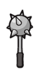
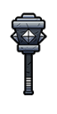
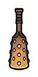
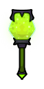
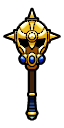
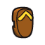

Type: Heavy Mace
Power: 20 Attack
Ability: A classic iron sphere embedded with sharp spikes, delivering brutal crushing impact.

Type: Earth / Heavy
Power: 38 Attack
Ability: Carved from heavy weathered stone with diamond studs to break through enemy armor easily.

Type: Club / Melee
Power: 25 Attack
Ability: A sturdy wooden bat reinforced with metal studs, great for heavy blunt-force strikes.

Type: Poison / Magic
Power: 54 Attack
Ability: A glowing green toxic orb encased in dark metal that splashes corrosive venom upon impact.

Type: Treasure / Elite
Power: 60 Attack
Ability: An ornate golden mace embedded with blue sapphires, boosting critical damage and coin drops.

Type: Meme / Unique
Power: 30 Attack
Ability: A legendary wooden slipper shaped like a sandal, striking fear into the hearts of all foes!